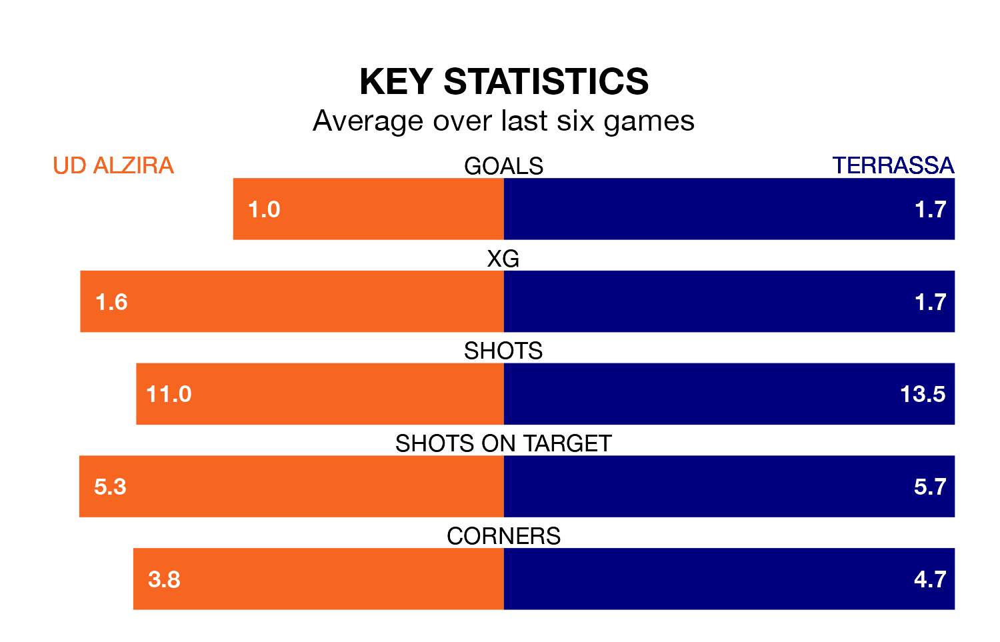

Terrassa travel to UD Alzira on late Sunday in the Segunda División RFEF Group 3.
The visitors come into the game on the back of a win in their last match, having beaten Valencia B 1-0 at home, with a goal from Aythami Perera García.
Alzira also won their last match, 2-1 against La Nucía, with their goals scored by Pablo Palacín Serra and Ignacio Vila Catalá.
With 34 goals in 30 games so far this season, Alzira are scoring at below the league average rate with 1.1 goals per game. And they are conceding at an average rate, letting in 37 goals at a rate of 1.2 per game.
Terrassa, meanwhile, are above average scorers, with 1.3 goals per game, compared to a league average of 1.2. They have conceded 1.2 goals per game.
The hosts are in mixed form in the Segunda División RFEF Group 3, with two wins and two draws from their last six games.
With four wins and a draw over that period, the away team's form is better – they have taken 13 points from 18, compared to Alzira's eight.
Terrassa are seventh in the table after 30 games, of which they have won 11 and drawn 10, earning 43 points.
Alzira are four places behind Terrassa in 11th, with nine wins and 12 draws putting them on 39 points.
In the last three years, Alzira and Terrassa have played each other on three occasions. they drew all of them.
Their last meeting was on December 2, when they played out a 2-2 draw.
Updated: 11:20 (UTC), 09/04/24